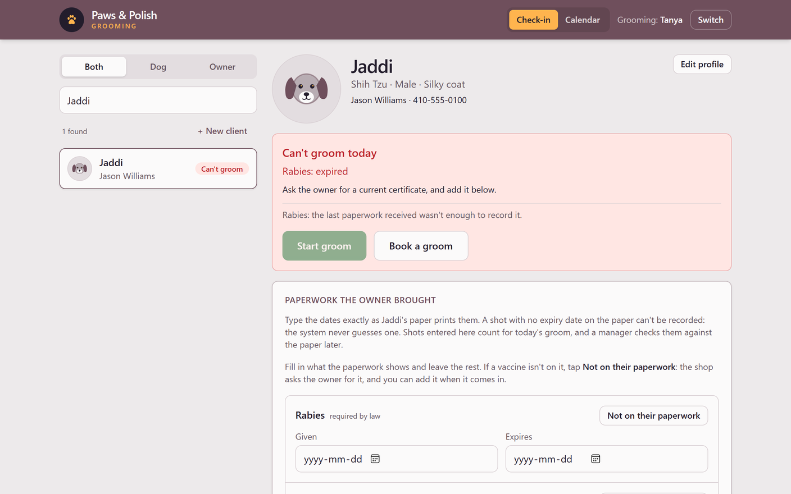

A sequel to The Missing Date
Software isn't finished when it works. It's finished when someone who has never seen it can run it on a busy Saturday, without calling us. This is the story of the manual we wrote so a small grooming shop can do that.
Chapter 1
In The Missing Date, we built a grooming shop's system around one rule: if Jaddi's paperwork doesn't say when his rabies shot expires, the system won't guess. He stays "not cleared" until the shop has the real certificate.
That refusal protects the shop. But a refusal on its own just stops the line. The groomer at the counter sees a red box, a dog waiting, and an owner asking why. What do they do next? Who fixes it? Can the manager override it?
A small shop has no IT department and no trainer. When we hand the system over and leave, the only thing still in the room is what we wrote down.
So the real question isn't whether the system works. It's whether the shop can run it without us.
Chapter 2
The people who touch the system don't share a job, so they shouldn't share a manual. The first page asks one question, which manual is yours?, and sends each reader to the one written for them.
13 procedures. Signing in, checking in a dog, adding vaccine paperwork, booking a groom, and recording the haircut.
11 procedures. Opening Admin, verifying shots typed in without a copy, second looks at hand checks, and the staff list.
9 procedures. Starting the app, running the database tests, backups, publishing, and the AI that reads paperwork.
Every procedure has a number, like GRM-02 or MGR-04, and follows the same order: what it's for, who does it, what must already be true, the steps, what the screen shows when it's done, and what to do if it isn't.
Chapter 3
The standard we held every page to: leave nothing for the reader to work out. If a step makes them guess where a button is, what it's called, or what happens next, the step isn't finished.
Weak
Search for the dog by its name or the owner's name.
Strong
One action per step. Every button named exactly as the screen names it. Every step says where to look and what you'll see after. It reads slower than a quick tip, and it's the version a new hire can follow on their first morning.
Chapter 4
Back to Jaddi. The rule that his shot can't be recorded without an expiry date exists in three places, and each one speaks to a different reader.

SOP GRM-06 · Groomer manual · Add vaccine paperwork
A shot with no expiry date on the paper cannot be recorded. The system never guesses one. Leave that vaccine's dates empty.
And when the red box does appear, the Check-in procedure has a section titled with the screen's exact words, Can't groom today, that says what it means and what to do. Every section is numbered, so a manager can text a groomer a link straight to the fix.
Chapter 5
Most manuals are right on the day they're written. Then the software changes, and the manual quietly becomes fiction. We built this one so that's hard to do.
Anyone can hand over working software.
The harder story is software the shop can keep running.
Quarto · Python · Playwright · PostgreSQL 16 · pgTAP